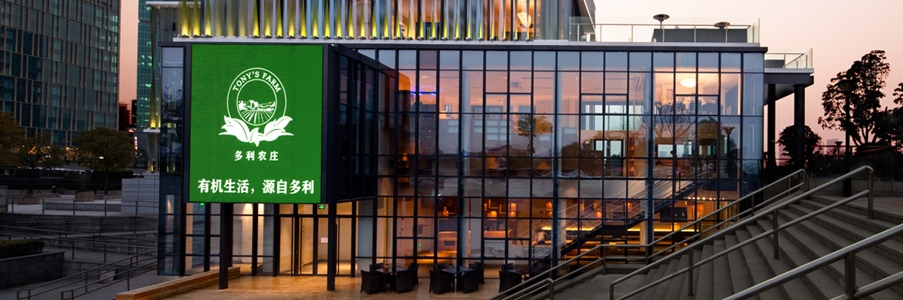

地下一层（B1）
开放式课堂设计，适合小型论坛、烹饪课程教学
一至二通道（F1-2）
阶梯式通层设计，适合氛围轻松的聚会及发布会
VIP三层（F3）
私密尊享空间，适合高端沙龙活动，露台江景一览无余

多利微商场
400 820 2162
选址陆家嘴滨江，背靠双辉大厦，毗邻文华东方大酒店，是陆家嘴少见闹中取静的一端。体验中心由世博德国馆设计 团队打造，全玻璃透光构造。为避免光污染，外立面由环保线网覆盖，兼备私密性与高端体验。
可承接各类高端客户活动及大型户外活动
开放式课堂设计，适合小型论坛、烹饪课程教学
阶梯式通层设计，适合氛围轻松的聚会及发布会
私密尊享空间，适合高端沙龙活动，露台江景一览无余
孟晨原在伦敦文华东方大酒店担任行政总厨12年，管辖两个米其林餐厅，具有 丰富中西餐饮经验。他毕业于英国泰晤士河谷大学，担任过多次国家领导人访英 的主厨，同时也担任过2007年撒切尔夫人80岁生日晚宴、2008年英国女王和 皇室成员海军成立200周年庆典、2011年威廉王子世纪婚礼的主厨。
曾在国外生活多年的他，对食材的健康、品质尤为关注，他认为只有纯天然的食材，加以 用心料理，才能带给顾客带来味蕾上的冲击。
上好的三黄鸡，搭配新鲜猪肚，口感细腻味美。
选用了有机黑木耳，健康有机，爽脆可口。
被誉为“雪裙仙子”，营养价值丰富，具有滋补强壮、益气补脑、宁神健体的功效，冰镇过后保持了它最初的新鲜感。
健康的食材，选用的是有机瓠瓜，口感酥脆，细腻。
极简的田园风格，玉米、香菇、魔芋块、南瓜、杏鲍菇等各类有机蔬菜搭配而成，营养均衡，绿色健康。
以有机黄瓜作为原料，清脆爽口，健康消暑。
口感媲美真正的鲍鱼，健康美味的首选。
严格挑选新鲜的香螺，配以秘制配料烹饪而成，口感极佳。
挑选健康散养猪肉为原料，口感柔软细腻，配以甜蒜提味，回味无穷。
选用新鲜的青鱼，浓油赤酱的本帮菜，口感酥脆。
一种非常名贵的中草药，素有“药王”之称，各种微量元素均高于野生西洋参。
一种顶级食材，营养丰富，口感极佳。
极其珍贵的食用菌，口感极佳，营养丰富，具有提高人体免疫力，补脑提神等功效。
具有独特的浓郁香味，是世界上珍稀名贵的天然药用菌，含有多种微量元素，营养丰富。